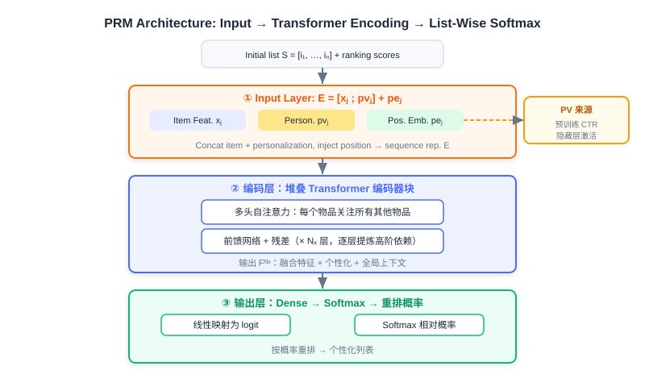
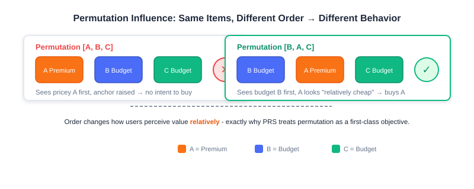
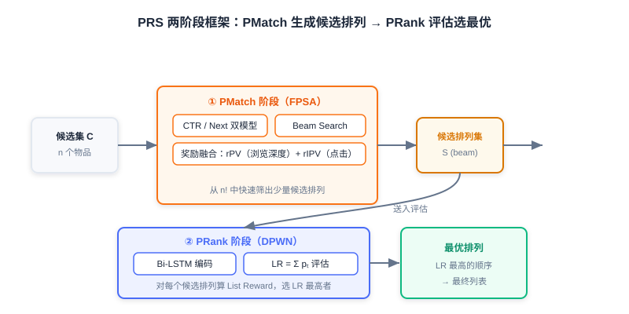

Personalized Re-ranking
📝 Before You Continue: Please finish the greedy re-ranking in 4.1 first. This chapter builds on the shared premise that "re-ranking must balance relevance and diversity," but upgrades the means from "hand-crafted objective functions" to "models learning end-to-end from data."
In the previous section we explored greedy re-ranking methods. They make local adjustments to the initial ranked list by explicitly defining optimization objectives for diversity, relevance, or coverage — computationally efficient and highly interpretable. But they fall short when handling complex item-to-item mutual influence and deep personalization:
- The objective functions usually need to be hand-designed, making it hard to capture high-order, non-linear interaction patterns;
- Deeply integrating user personalization information into list-level optimization is also challenging.
This chapter introduces two classic personalized re-ranking models: PRM (Personalized Re-Ranking Model) and PRS (Permutation Retrieve System), to see how models "learn" the optimal list on our behalf.
After reading this chapter, you will be able to:
- Explain why PRM marks the shift of re-ranking from rules/heuristics toward data-driven, end-to-end learning
- Describe PRM's input layer, encoding layer (Transformer), output layer, and how the personalized vector PV is generated
- Write out the self-attention formula, and explain how Softmax implicitly models relative relationships among items in PRM's output layer
- Understand permutation-variant influence, and why PRS optimizes the permutation directly
- Describe PRS's two-stage solution: PMatch (FPSA candidate generation) and PRank (DPWN permutation evaluation)
- Complete 4 leveled practice problems to consolidate the core mechanisms of PRM/PRS
4.2.0 From Rules to Learning: Why Personalized Re-ranking
The diversity objective of greedy re-ranking (MMR/DPP) is "universal" — it applies the same similarity matrix and the same weights to every user. But in real recommendation, the optimal ordering of the same list differs across users: some prefer long-form deep reads first, others prefer short videos; some are price-sensitive, others are not.
This is the founding rationale of "personalized re-ranking": deeply integrating each user's unique preference signals into the optimization of the whole list. It no longer leans on a preset diversity formula; instead, the model learns directly from massive behavioral data "which combination of items, in which order, works best for this user."

💡 Key Insight: The rule-based approach asks "which list is better on average"; personalized re-ranking asks "which list is better for this user." The former is a population average; the latter gives every individual a list of their own.
🧠 Mental Model: Playlist DJ
Think of greedy re-ranking as a "generic playlist generator" — it only guarantees no repeated genres. Think of PRM as a "DJ who knows you" — he knows that tonight you want slow songs first, then bangers, so he gets the order right too. What the model learns is not "what a playlist should look like," but "what your playlist should look like."
4.2.1 Transformer Personalized Re-ranking Model (PRM)
The introduction of PRM (Personalized Re-Ranking Model) marks an important shift of re-ranking technology from rules/heuristics toward data-driven, end-to-end learning. Its core idea: use the Transformer's powerful sequence modeling to automatically learn the complex mutual influence among items in a list, and deeply integrate fine-grained user personalization into the whole re-ranking process, optimizing globally by maximizing a list-level utility objective (such as click-through rate).
PRM's overall architecture has three layers: the input layer, the encoding layer, and the output layer.
Input Layer: Fusing Personalization and Position
The input layer's core task is to prepare a rich initial representation for each item in the initial list , covering two key aspects:
- The item's own features (): basic information such as item ID embedding, category, tags, and statistical features.
- The user's personalized preference for the item (): encodes the interaction relationship and preference intensity between user and item — the key to PRM's personalization, detailed later.
PRM concatenates the item's raw feature vector with the personalized vector to form a more comprehensive base representation . In addition, the initial list itself carries latent sequential information (higher-ranked items may be more relevant), so a learnable position embedding (PE) is introduced, assigning a vector to each position. The final input representation is:
This combination is usually passed through a simple feed-forward network for dimension adjustment, to fit the Transformer encoder's input.
Encoding Layer: The Transformer Models Item Mutual Influence
The input layer supplies an item sequence carrying personalization and position information. The encoding layer's core goal is to use the Transformer's sequence modeling power to relate all items in the list to one another, capturing their complex, high-order mutual influence. This matters enormously for re-ranking because:
- Whether the user clicks the -th item may be significantly influenced by the -th (or even more distant) item — a substitute, a complement, or a source of variety;
- Such influence is often long-range, unconstrained by items' initial physical positions.
The Transformer's core mechanism is self-attention: every item in the sequence can attend to every other item (including itself), computing the similarity between its query vector and other items' key vectors to obtain attention weights, which decide how much information to aggregate from other items:
PRM adopts multi-head attention, organized in standard Transformer encoder blocks (multi-head self-attention + feed-forward network), stacked in multiple layers that progressively distill higher-order inter-item dependencies. The final output is each item's high-level representation , which fuses item features, personalized user preference, and contextual interaction information across the whole list.
Analysis: Compared with MMR/DPP's "pairwise similarities," PRM's self-attention can model arbitrary high-order, non-linear inter-item dependencies and naturally absorbs user signals. The costs: it needs training data, its inference cost exceeds rule-based methods, and the attention weights are less intuitive than MMR's formula — interpretability drops. It fits core scenarios with abundant data and sensitivity to personalization gains.
Output Layer: Softmax List-Level Scoring
PRM applies a linear transform () to each item's high-level representation , mapping it to a scalar score (logit), then feeds it into Softmax:
Softmax plays two key roles here:
- Normalization: it converts all scores into a probability distribution, with item probabilities summing to 1;
- Implicit relative-relationship modeling: each item's final probability depends not only on its own score but also on its relative comparison against all other items' scores in the list — a natural fit for re-ranking's need to assess items' relative importance.
Generating the Personalized Vector (PV)
Looking back at the whole pipeline, PV is what distinguishes PRM from ordinary re-ranking and makes it truly "personalized." Where does PV come from? PRM adopts a clever and practical strategy: use a pre-trained click-through-rate prediction model to generate PV.
- The pre-trained model's role: trained on massive user behavior history, it learns to predict the probability that user with behavior history clicks candidate item .
- Extracting the personalized vector: PRM does not use the predicted click probability itself, but extracts the hidden-layer activation just before the model outputs the final click probability (usually via Sigmoid). This vector carries rich abstract information about "how much user prefers item ," and serves as item 's personalized vector with respect to user .
- Feeding PRM: for every item in the initial list, is computed through the pre-trained model above and passed as a key input into PRM's input layer.
Core code (excerpt):
# User-side embedding -> [B, max_len, D], so every position carries the same user context
user_part_embedding = tf.tile(tf.expand_dims(user_part_embedding, axis=1),
[1, max_seq_len, 1])
# Page-level sequence representation: concatenate user + item features + PV + item embedding
page_embedding = concat_func(
[user_part_embedding, item_part_embedding, pv_embeddings, item_embeddings],
axis=-1) # ← KEY LINE: fuse four kinds of signals
# Add position encoding to form the Transformer's final input
enc_inputs = add_func([page_embedding, position_embedding]) # ← KEY LINE: inject position information
# Stack Transformer encoder layers
for _ in range(transformer_blocks):
enc_inputs = TransformerEncoder(
intermediate_dim, nums_head, dropout_rate,
activation="relu", normalize_first=True, is_residual=True)(enc_inputs)
# Scoring head: map each position to one probability
enc_output = tf.keras.layers.Dense(intermediate_dim, activation='tanh')(enc_inputs)
enc_output = tf.keras.layers.Dense(1)(enc_output)
score_output = tf.keras.layers.Activation(activation='softmax')(
tf.keras.layers.Flatten()(enc_output)) # ← KEY LINE: list-level relative scoring
The paper's experiments show that PRM delivers consistent gains over baselines on metrics like map@5, validating the effectiveness of end-to-end personalized re-ranking.
The interactive demo below gives you a direct feel for how PRM "reads" through the whole list with a Transformer step by step, then outputs a re-ranked relative probability for each position:
Click "Next" to watch: how the initial list enters the encoder carrying PV and position embeddings, how self-attention progressively aggregates cross-item information layer by layer, and how Softmax finally turns scores into re-ranked relative probabilities.
4.2.2 Permutation-Based Re-ranking Model (PRS)
Although PRM achieves end-to-end personalized re-ranking with a Transformer, it still has one fundamental limitation: a lack of deep understanding of the impact of permutations.
Picture a scene: a user feels no urge to buy when facing the list [A, B, C], yet buys A upon seeing the permutation [B, A, C]. This phenomenon is called permutation-variant influence — one plausible explanation: placing the pricier B up front makes A feel relatively cheap, which triggers the purchase.

Traditional re-ranking (including PRM) focuses mainly on optimizing individual item scores, while ignoring the influence of the item ordering itself on user behavior. PRS's design idea: evaluate all possible item permutations and pick the one with the best user experience. But items have permutations — computationally infeasible — so PRS proposes a two-stage solution:
- PMatch stage: a search algorithm quickly screens down to a small number of candidate permutations;
- PRank stage: a neural network evaluates these candidates' quality and picks the winner.
The PRS Overall Framework

The PMatch Stage: Candidate Permutation Generation (FPSA)
PMatch (Permutation-Matching) aims to efficiently identify candidate permutations from the exponential permutation space. It employs FPSA (Fast Permutation Searching Algorithm), combining beam search with two user-behavior prediction models.
Offline training: a dual-model prediction system
- CTR model: predicts the probability that the user clicks an item,
- Next model: predicts the probability that the user keeps browsing to the next item after finishing the current one,
Both are modeled in the standard point-wise fashion (Sigmoid activation + cross-entropy loss):
The Next model reflects the continuity of user browsing: an item must not only attract clicks but also lead the user on to subsequent content.
Online serving: the FPSA algorithm
FPSA models user browsing as a sequential decision process — an item's value in a sequence depends not only on its own features but also on its role along the whole browsing path. At its core, a beam search builds candidate permutations step by step, pruning by a reward function at each step. The reward fuses two metrics:
- rPV (Page View Reward): measures the total browsing depth a permutation can bring, encouraging combinations that guide users deeper;
- rIPV (Item Page View Reward): measures the total probability of items in the permutation being clicked, securing commercial value.
FPSA core code (excerpt):
def fpsa_algorithm(items, ctr_scores, next_scores, beam_size=5, max_length=10,
alpha=0.5, beta=0.5):
"""Fast Permutation Searching Algorithm (beam search generates candidate permutations)."""
S = [()] # candidate permutation set, initially the "empty sequence"
for i in range(1, max_length + 1):
St = S.copy()
S, R = [], {}
for O in St:
for ci in items:
if ci not in O:
Ot = O + (ci,) # append the unseen item ci to the tail
r = calculate_estimated_reward(Ot, ctr_scores, next_scores, alpha, beta)
R[Ot], S.append(Ot) = r, Ot
# Beam search truncation: keep the top beam_size by reward
S = sorted(S, key=lambda x: R[x], reverse=True)[:beam_size] # ← KEY LINE
return S
def calculate_estimated_reward(O, ctr_scores, next_scores, alpha, beta):
r_pv, r_ipv, p_expose = 1.0, 0.0, 1.0
for ci in O:
p_ctr, p_next = ctr_scores[ci], next_scores[ci]
r_ipv += p_expose * p_ctr # accumulate expected clicks
p_expose *= p_next # exposure-chain probability decays with position
r_pv = p_expose # probability of browsing to the end
return alpha * r_pv + beta * r_ipv # linearly fuse PV and IPV
Analysis: FPSA's beam search cuts down to a manageable candidate set — a pragmatic engineering answer to combinatorial explosion. But it depends on the accuracy of the two point-wise CTR/Next models, and its reward is a linear fusion that may miss non-linear permutation gains.
The PRank Stage: Permutation Evaluation (DPWN)
PRank (Permutation-Ranking) takes the candidate permutations PMatch generates and evaluates each permutation's quality with the neural network DPWN (Deep Permutation-Wise Network).
DPWN's design philosophy: an item's value in a permutation depends not only on its own features but also on its position and role in the context of the whole sequence. To this end it adopts a Bi-LSTM architecture:
- Sequence encoding layer: a bidirectional LSTM computes the contextual representation of the -th item:
- Feature fusion layer: , fusing sequence representations with user/item features.
- Prediction layer: an MLP predicts the click probability of each position, .
List Reward (LR) is PRank's core evaluation metric, defined as the sum of predicted click probabilities over all items in the permutation:
During online serving, PRank computes the LR of every candidate permutation and outputs the permutation with the highest LR.
💡 Key Insight: The fundamental divide between PRS and PRM is this — PRM optimizes "each item's relative score," with positions implied by scores; PRS directly optimizes the experiential gain brought by the ordering itself (LR), treating order as a first-class citizen. The former cares about "which items to pick"; the latter cares about "how to arrange them."
🧠 Mental Model: Shelf Display vs. Item Pricing
PRM is like a manager who prices each product — he gets every tag as accurate as possible, but the shelf order is just sorted by price. PRS is like a store manager who obsesses over display — he knows that "putting the expensive end-of-season piece up front makes the mid-shelf bargain look like a deal," so he optimizes the placement order of the whole product group separately.
⚠️ Common Mistakes in 4.2
| # | Mistake | Example | Why It's Wrong | Fix |
|---|---|---|---|---|
| 1 | Assuming PRM is personalized by default | "PRM can personalize with only item features as input" | Personalization comes from PV; without PV it degenerates into ordinary re-ranking | You must feed in the pre-trained CTR model's hidden layer as PV |
| 2 | Confusing PRM with a ranking model | "PRM is just CTR prediction" | PRM optimizes list-level relative relationships; ranking is point-wise | Remember PRM's output is Softmax relative probabilities |
| 3 | Ignoring permutation-variant influence | "[A,B,C] and [B,A,C] work the same" | Order changes users' relative price/preference perception | Only PRS-style methods treat order as an optimization target |
| 4 | Underestimating the explosion | "Just enumerate all permutations and pick the best" | 10! ≈ 3.6 million; 20! is beyond computation | Use PMatch's beam search to cut candidates |
| 5 | Treating PRS as single-stage | "PRank searches permutations directly" | Without PMatch's candidate generation, PRank has nothing to evaluate | Both stages are indispensable |
Chapter Summary
📌 Key Takeaways
| Concept | Key Points | Why It Matters |
|---|---|---|
| Motivation for personalized re-ranking | Rule methods apply one objective to everyone; no per-user adaptation | Deeply integrates user preference into list optimization |
| PRM input layer | , fusing four kinds of signals | PV is the core of personalization |
| PRM encoding layer | Transformer multi-head self-attention models high-order mutual influence | Captures cross-item, long-range dependencies |
| PRM output layer | Softmax → list-level relative probabilities | Implicitly models relative importance among items |
| PV generation | Take the pre-trained CTR model's hidden-layer activation | Reuses existing ranking knowledge for personalization |
| Permutation-variant influence | Same items, different order → different behavior | The motivation for PRS's existence |
| PRS two stages | PMatch(FPSA+beam)→PRank(DPWN+LR) | Dissolves the combinatorial explosion |
❓ FAQ
Q1: Can PRM be combined with DPP from 4.1?
A: Yes, and it's common. DPP/MMR often serves as a baseline or post-processing for PRM: first let PRM learn list-level preference, then apply DPP as a diversity-constraint safety net. The two are complementary — one handles personalization, the other set diversity.
Q2: Why take the hidden layer for PV instead of the final click probability?
A: The final click probability is a scalar squashed by Sigmoid — heavily compressed information; the hidden-layer activation is a high-dimensional abstract vector that preserves rich semantics about "why the user prefers this item," making it a better personalized input for PRM.
Q3: Can PRS's beam search miss the truly optimal permutation?
A: Yes. The beam keeps only the top- local candidates by reward — it's an approximation. But versus full enumeration, this is a necessary engineering trade-off; in practice, with a good reward function, the top candidates are already high quality.
🔗 Connections to Later Chapters
- 4.1 (greedy re-ranking) is the contrasting baseline for PRM/PRS — rule methods are lightweight; personalized methods are expressive.
- Part 3 ranking supplies the pre-trained CTR model and ranking scores PRM needs — the source of PV.
- Part 5 trends (the generative paradigm) pushes "list generation" further toward end-to-end; PRS's permutation-optimization idea re-emerges naturally as autoregression in generative architectures.
- The next volume on generative recommendation replaces the "retrieval → ranking → re-ranking" cascade with a single sequence model, folding re-ranking's objective directly into the generation objective.
Practice Problems
Work through all problems in order — they get progressively harder. Each has a complete solution you can reveal after trying it yourself.
Problem 4.2.1 — Telling the Two Kinds of Re-ranking Apart 🟢 Easy
Decide whether each description below is closer to (a) greedy re-ranking (MMR/DPP) or (b) personalized re-ranking (PRM/PRS), and explain why:
- (i) The system re-ranks every user with the same similarity matrix and a fixed .
- (ii) The system extracts the pre-trained CTR model's hidden-layer vector for each user as re-ranking input.
💡 Solution (click to reveal)
Approach: Grasp "whether user personalization is incorporated, and whether it is data-driven."
- (i) Greedy re-ranking: fixed similarity and , identical for all users, no personalization — a rule/heuristic approach.
- (ii) Personalized re-ranking (PRM): taking the pre-trained CTR model's hidden layer as PV is PRM's signature move, deeply incorporating user preference.
Key points:
- Whether "per-user personalized signals" exist is the essential dividing line between the two families.
- Presence of PV ≈ PRM; a fixed objective function ≈ a greedy method.
Problem 4.2.2 — PRM's Input Representation 🟢 Easy
In PRM, from which parts is an item 's final input representation assembled by concatenation/addition? Write the formula and explain what problem each part solves.
💡 Solution (click to reveal)
Approach: Recall the input layer of 4.2.1.
Formula:
- concatenation: fuses "what the item is" with "how much the user prefers it" (personalization), solving the per-user-adaptation problem;
- position embedding: injects position information within the list, solving the problem that "the Transformer itself carries no order."
Key points:
- Concatenation merges features from different sources; addition injects position.
- All three parts are indispensable: no PV means no personalization; no PE means no sense of order.
Problem 4.2.3 — Analyzing Permutation-Variant Influence 🟡 Medium
An e-commerce list has items [A (expensive), B (budget), C (budget)]. The product manager finds that changing [A, B, C] to [B, A, C] noticeably lifts A's click-through rate. Explain this phenomenon with "permutation-variant influence," and state what it implies for re-ranking method selection.
💡 Solution (click to reveal)
Approach: Use the permutation-variant influence framework from 4.2.2.
- Explanation: A is the expensive item. When A comes first ([A,B,C]), the user sees the high price first and their threshold rises; after switching to [B,A,C], the user sees the budget B first, and A then feels "relatively cheap," triggering the purchase urge — that is, order changes the user's relative perception of value, which is permutation-variant influence.
- Implication: Traditional point-wise scoring (including PRM's score optimization) assumes "order doesn't affect an item's value" and misses this gain. You need a method like PRS that treats "the ordering itself" as the optimization target (evaluating whole-list gains with LR) to capture the experiential lift brought by order.
Key points:
- Permutation-variant influence = same items, different order → different behavior.
- It points toward methods where "order is a first-class optimization target" (PRS), not methods that only optimize individual item scores.
🏆 Challenge: Designing a Hybrid Re-ranking Scheme 🔴 Hard
A feed product wants both "personalization" (PRM's strength) and "strong set diversity" (DPP's strength), while controlling inference latency. Write a short design argument (within 150 words): how to combine PRM and DPP (in sequence / in parallel / in cascade), and give one risk of each sub-option and a mitigation.
💡 Hint
Three common combinations: (1) Cascade — PRM scores, then DPP does diversity post-processing; the risk is DPP may break the personalized order PRM learned; mitigate with a soft constraint. (2) Parallel — score both ways and fuse with weights; the risk is the weights are hard to tune; mitigate with offline grid search. (3) Inject PV into the DPP kernel — encode PRM's PV into ; the risk is the kernel must be recomputed; mitigate with incremental updates. Focusing your argument on one option is enough.